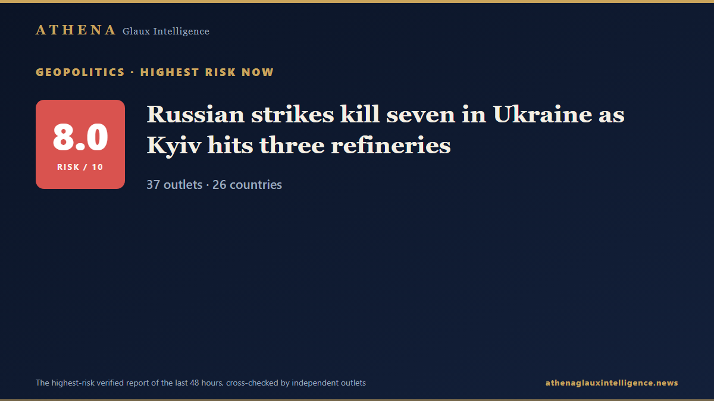

Risk 8.0Elevated
Geopolitics, the economy and maritime shipping — cross-checked across countries.
Geopolitics
All geopolitics >Highest risk now

Rising riskRisk up in the last 24 hours
Maritime & shipping
Maritime desk >Highest risk now
Risk 7.5Elevated
35 Migrants, Including Children, Detained near Black Sea Village of Sinemorets
Read the evidence ›
Rising riskRisk up in the last 24 hours
Every headline, checked across countries.
ATHENA Glaux reads 744 news outlets worldwide. A story becomes a verified event only when independent outlets report it. Each event shows who was first and a risk score with its reasons.
1,462events in 24 hours
744outlets followed
43minutes between updates
Earthquake or flood near you this week?
Type your town and see the earthquakes, floods, storms and official warnings near it, with a 72-hour emergency kit checklist. Free, no sign-up, and your place stays on your device.
Reports drift in from independent outlets - when two meet on the same story, it becomes a verified event.
How ATHENA checks a story
- CollectReports arrive from independent outlets in many countries.
- MatchWhen two outlets meet on the same story, it becomes a verified event.
- ExplainEach event shows who was first, how far it spread and why the risk is what it is.
Global risk outlook
Weekly and monthly reviews: the highest-risk events, the trends by domain and region, and what to watch next.
Read the outlook ›Daily briefing
The ten most important world events of the day, the rising risks and the new events, with every number explained.
Open today's briefing › Geopolitics
GeopoliticsAt least 11 wounded in second Houthi strike on Saudi capital in a week
Saudi Arabia's Civil Defense says Yemen's Houthis hit the tallest tower in Riyadh for the second time in less than a week. from Haaretz (English)
6.2Importance
6.6Risk · high
90%Confidence
Geopolitics
Poland Urges NATO to Down Russian Missiles Over Ukraine
Poland has asked NATO allies to consider intercepting Russian missiles over Ukraine if they are heading toward alliance territory, Bloomberg reported. from Kyiv Post
Energy & Environment
29 miners believed trapped by flooding in an unauthorized gold mine in Indonesia
JAKARTA, Indonesia, Nov 25, (AP): Rescuers were searching Wednesday for 29 miners believed trapped by flooding more than a day earlier in an unauthorized gold mine in Indonesia.... from Arab Times
Sponsored
Cybernetics and Artificial Intelligence Lab Welcome to the Cybernetics and Artificial Intelligence Laboratory, established at the Department of Business Administration of the National and Kapodistrian University of Athens. The lab is headed by Professor Dimitrios Thomakos. The lab aims to do research that can be published in top venues. Our research uses tools and methods of Artificial Intelligence, and lies in the following areas: - Forecasting - Decision making - Cyber security - Finance We are always looking forward to collaborating with exceptional students!
Learn more – Cybernetics and Artificial Intelligence LabShips at the world's chokepoints now
Live AIS counts. Tap or hover a bar for the detail.
Latest reports
Israeli opposition advances October 7 attack probe opposed by Netanyahu
Britain moving military aircraft to hangars at night over possible drone threats, media reports say
Unclassified CIA system breached in cyberattack: Report
Jordan sentences man to death over attack that killed officer
Flipkart leadership shake-up: CEO Kalyan Krishnamurthy to step down after 11 years
Pakistan says nuclear weapons decisions must remain under human control
Amazon to sell cars online in UK from next year
Libyan Army Vows Retaliation After 2 Naval Officers Die of Wounds From Ukrainian Drone Attack
Energy & Environment
China courts Global South with climate cooperation push at COP31
China made South-South climate cooperation central to its COP31 message, pledging clean energy, resilience and training support to developing countries. from Eco-Business
Geopolitics
Several Russian aircraft flew into air defense zone: South Korea
SEOUL, South Korea, Nov 24, (AP): South Korea scrambled fighter jets Tuesday to chase away Russian military aircraft that flew inside the country’s air defense identification zon... from Arab Times
Technology & Cyber
Jensen Huang is back, but Nvidia still has to deal with his baggage
Massive data centers in Southeast Asia exploited a gap in U.S. sanctions, providing crucial computing power for Chinese companies and a cover for alleged chip smuggling. from to vima
Geopolitics, Politics & Security
More ›Sanctions & disputes
N. Korea closes Swiss office in Pyongyang over sanctions on children's camp
SEOUL, Nov. 25 (Yonhap) -- North Korea on Wednesday shut down Switzerland's dipl... from Yonhap (English)
- Alliances & treaties
Australia, Solomon Islands sign sweeping pact stymieing China
- Elections & politics
Israel's Eisenkot clinches first coalition agreement in bid to form government
- Wars & conflicts
2 Indians among 11 injured in Houthi attack in Saudi Arabia's Riyadh
- Wars & conflicts
Ukrainian forces strike two Russian oil refineries
Economics, Finance & Markets
More ›Inflation & interest rates
US inflation rises further in October
WASHINGTON: US inflation increased further in October, reinforcing expectations that the Federal Reserve could continue raising interest rates into early 2027. from Business Recorder
- Forecasts & recession risk
Will weather ground Macy’s Thanksgiving Parade balloons? Official floats start time change
- Stocks, bonds & markets
Treasury's FinCEN takes systems offline after cybersecurity incident
- Crypto & digital assets
Ukraine’s parliament passes law to legalize cryptocurrency
- Inflation & interest rates
Malaysia set to hold rates on strong growth, signal hike in 2027
Trade, Industry & Infrastructure
More ›Tariffs & export controls
US announces new tariffs of up to 20% on China, the EU, and 12 other nations
The Trump administration on Wednesday proposed new tariffs of up to 20% on China, the European Union, and 12 other major US trading partners to take effect next year, following an 8-month… from Daily Mirror
- Tariffs & export controls
US Proposes 25% Tariff On India. It Could Come Down With Trade Deal
- Aviation, rail & road
CJP’s Saurav Das moves Delhi HC after being stopped from travelling to UK
- Construction & infrastructure
Malaysia to repatriate thousands more Myanmar migrants
- Shipping & ports
APM Terminals Maasvlakte II and Port of Rotterdam Authority take next step in terminal development
Energy, Resources & Environment
More ›Pollution & biodiversity
Army detonates lead azide stockpile in Middletown, Iowa
Iowans are preparing for the U.S. Army to detonate a stockpile of lead azide on Wednesday morning, with recommendations to shelter inside or evacuate. from UPI World News
- Energy security
British household energy bills to jump 26 percent on Iran war shock
- Extreme weather & natural disasters
England logged record 5,258 heat-linked deaths this summer: health agency
- Oil & gas
China, India set for record Russian oil imports in 2026
- Oil & gas
TotalEnergies strengthens its partnership with Continental Resources to develop its gas production
Technology, AI & Cybersecurity
More ›Chips & computing
Nvidia board joins Jensen Huang under scrutiny after reinstating embattled CEO
Jensen Huang has been under a spotlight for weeks, but after the 11-day period of disorder that included the resignation and reinstatement of the Nvidia executive, the company's board is joining him… from The Korea Times
- Quantum & emerging tech
European Commission Proposes Quantum Act and New Sovereign Tech Equity Fund
- Chips & computing
AI trust crisis exposes cracks in Korea's stock market
- Space & satellites
China sends first foreign astronaut to its space station as Pakistani joins Shenzhou 24 crew
- Artificial intelligence
The Saudi engineer accused of bugging OpenAI is set to be released on a $1 million bond
Business, Companies & Investment
More ›Boards & executives
‘Minor’ turn in Tiger Shroff attack case, 17-year-old sent to Juvenile Justice Board
- Mergers & acquisitions
Gulftainer acquires Bangkok terminal, expands China-Gulf links
- Corporate strategy
FSSAI on pan-India enforcement drive on packaged drinking water, lab test to take 1-2 months: CEO Rajit Punhani
- Corporate strategy
Eurostar services between London and Paris cancelled after staff go on surprise strike
- Earnings & outlook
US Army to detonate unstable lead-based explosives in Iowa
Accidents & emergencies
More ›Accidents & emergencies
Bristol City 1-1 Wrexham recap: Reaction after Cam Pring fires Robins to draw at Ashton Gate
Live updates from Ashton Gate, where Michael Skubala and Bristol City host Wrexham in the Championship (7:45pm kick-off) from Bristol Post
- Accidents & emergencies
At least 3 killed, 14 injured after under-construction building collapses near Karachi's Baloch Colony
- Accidents & emergencies
Plane crash off the coast of Mississippi kills 6, including 2 children
- Accidents & emergencies
Hanoi gas explosion kills 6, injures 10
- Accidents & emergencies
Ras Al Khaimah bus-truck collision kills 13, injures 14
Three ways to read today
Start with the one that fits your timeVerified events
Ranked by how widely they are reported
- What NVIDIA CEO Jensen Huang will face when he testifies before US Congress184 outlets · 56 countriesRisk 4.4
- Saudi-led coalition strikes Hodeidah as Houthis threaten ports132 outlets · 48 countriesRisk 6.7
- Ukraine Says Drone Strike That Sank Russian Corvette Merkury In Libya Was Self-Defence121 outlets · 48 countriesRisk 6.2
- Two more oil tankers explode in Strait of Hormuz unsafe route87 outlets · 33 countriesRisk 4.8
- Huawei convicted of money laundering, conspiracy to steal trade secrets, and fraud by US jury45 outlets · 27 countriesRisk 3.1
Assessment Desk
Ask a question and read a reasoned assessment of a leading story, with what would prove it wrong.
Open the Assessment Desk ›Today in numbers
| 18:00 | 576 |
|---|---|
| 19:00 | 599 |
| 20:00 | 1041 |
| 21:00 | 916 |
| 22:00 | 605 |
| 23:00 | 495 |
| 00:00 | 290 |
| 01:00 | 464 |
| 02:00 | 376 |
| 03:00 | 537 |
| 04:00 | 431 |
| 05:00 | 365 |
| 06:00 | 259 |
| 07:00 | 380 |
| 08:00 | 329 |
| 09:00 | 303 |
| 10:00 | 479 |
| 11:00 | 1165 |
| 12:00 | 1146 |
| 13:00 | 839 |
| 14:00 | 706 |
| 15:00 | 892 |
| 16:00 | 761 |
| 17:00 | 591 |
Risk of today's events
Geopolitics90Trade & Industry36Economy & Markets35Technology & Cyber35Business33Energy & Environment23Maritime5
Emerging signals
- Sudden surge · Active nowIraq's
- Sudden surge · Active nowHuawei
- Sudden surge · Active nowCartagena
- Sudden surge · Active nowSolomon Islands
- Sudden surge · Active nowCIA
Official warnings
- M 6.5 - Vanuatu regionM6.5 · USGS ·
- M 5.9 - 238 km SW of Yanglong, ChinaM5.9 · PAGER yellow · USGS ·
Stay informed
ATHENA Weekly Risk Picture
The week's biggest geopolitical, economic and shipping risks, cross-checked and scored.
Every Friday at 08:00 Athens time · free · in English
Subscribe freeATHENA on Telegram
News the moment it is published: breaking events at risk 6 or more, an hourly round-up, risk-tracker updates and the daily briefing at 10:00.
Free · posts in English · leave at any time
Join the channelSign-up is handled by beehiiv with double opt-in: nothing you type is sent to ATHENA, and every issue has an unsubscribe link.
Risk trackers
More ›Strait of HormuzRisk 5.110 new this week · down from 21 the week beforeRed Sea shippingRisk 6.718 new this week · down from 50 the week beforeGreece–Turkey relationsRisk 3.76 new this week · about the same as the week beforeCyprusRisk 3.813 new this week · down from 18 the week beforeSanctions on RussiaRisk 6.515 new this week · about the same as the week beforeRussia–Ukraine warRisk 7.5222 new this week · down from 263 the week beforeIsrael, Gaza & the West BankRisk 6.872 new this week · down from 92 the week beforeTaiwan StraitRisk 2.710 new this week · down from 14 the week beforeOil & gas pricesRisk 4.226 new this week · down from 39 the week beforeSuez CanalRisk 0.00 new this week · down from 3 the week beforeTurkish StraitsRisk 0.00 new this weekPanama CanalRisk 0.00 new this weekShadow fleetRisk 2.72 new this week · down from 4 the week beforeBlack Sea shippingRisk 7.52 new this week · down from 5 the week beforeCentral banks & interest ratesRisk 4.237 new this week · down from 45 the week beforeGreek economyRisk 0.87 new this week · about the same as the week beforeEastern Mediterranean energyRisk 0.01 new this week · down from 4 the week beforeBalkansRisk 4.914 new this week · down from 27 the week beforeMediterranean migrationRisk 0.00 new this week · down from 3 the week before
Global risk outlook — week 48, 2026 (23–29 Nov) ›
Around the world
North AmericaWhat NVIDIA CEO Jensen Huang will face when he testifies before US Congress
58 events
Middle East & North AfricaSaudi Arabia offers condolences to Turkiye after helicopter crash kills 5
58 events
EuropePOLL: Should Andy Burnham let influencers film in Downing Street? Prime Minister says he has 'immense respect'
56 events
Southeast AsiaTrump says trade deal reached between the U.S. and the Philippines
54 events
South AsiaUS proposes new tariffs on 14 trading partners, including China and the EU
54 events
Russia & EurasiaRussian strikes kill seven in Ukraine as Kyiv hits three refineries
44 events
Sub-Saharan AfricaHuawei convicted of money laundering, conspiracy to steal trade secrets, and fraud by US jury
43 events
East AsiaS. Korean won weakens slightly against U.S. dollar on foreign outflows
38 events
Latin America & CaribbeanAll Hostages Released After Supermarket Robbery in Cartagena
25 events